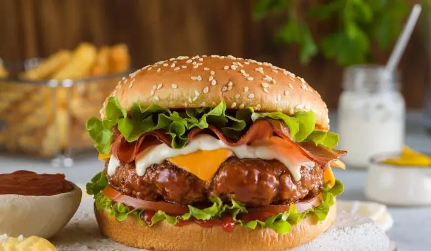
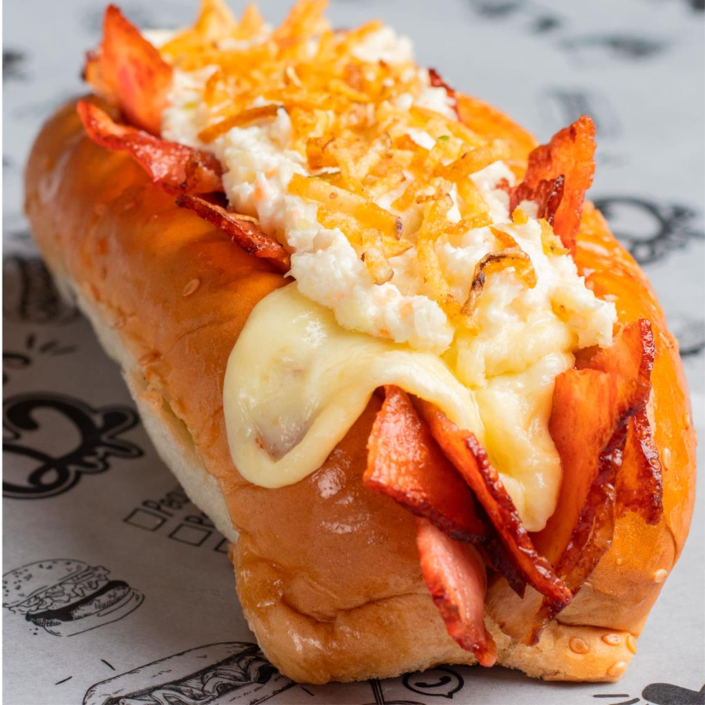
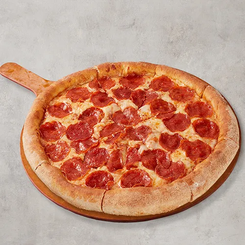

Hamburguesa
Jugosa carne a la parrilla con queso fundido, lechuga fresca, tomate y salsas especiales. Todo en un pan suave con ajonjolí. Ideal para una comida rápida, rica y completa. Puedes personalizarla con tocineta, huevo y más.
Precio: $12.000 COP (unidad)
Perros Calientes
Salchicha ahumada servida en pan suave, cubierta con papitas, salsas variadas y quesos. Puedes añadirle huevo de codorniz, tocineta o incluso piña. Un clásico de la comida callejera que nunca falla.
Precio: $8.000 COP (unidad)
Pizza
Masa crujiente con salsa de tomate, queso mozzarella y tus ingredientes favoritos. Desde pepperoni hasta vegetariana, cada porción es una explosión de sabor. Ideal para compartir con amigos o familia.
Precio: $14.000 COP (porción)
Salchipapas
Papas fritas doradas mezcladas con salchichas troceadas y bañadas en salsas. Se le puede agregar huevo, chorizo o pollo desmechado. Perfectas para una comida rápida y bien cargada.

Precio: $10.000 COP (porción)